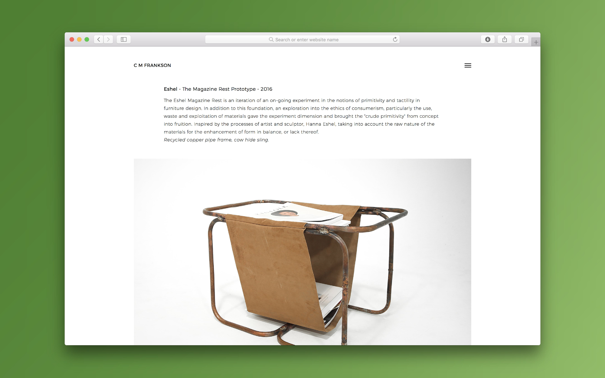

Digital Portfolio
C. M. Frankson
A portfolio of creative work
A dynamic digital portfolio for a multi-talented interior designer. A tidy presentation of the clients work across multiple disciplines with a strong emphasis on readability and ease of navigation. The design and development of a static web site will be migrated to the popular CMS Squarespace so that the client can easily manage content on the site.

Published: January 2016
The Design Process
The client was looking for an efficient way to introduce their work to prospective employers. As the portfolio will accompany written application it is important the clients work is the main focus of the site, with this in mind a collection of works has been displayed prominently on the home page. The navigation of the site is hidden in a menu or sidebar that allows for quickly switching between projects. As a hidden menu has the opportunity of being overlooked all essential links are visable outside the menu and the website can be used without this navigation if necessary.
The Development Process
The site in its current state consists of HTML, CSS and a small amount of jQuery. One popular jQuery plugin called Masonry was used for it's simple integration. Masonry controls the layout of the grid at the homepage so that the articles stack well regardless of the height of each image. Going forward the static website will be converted to a Squarespace theme so that the client has the ability to add projects without assistance.
